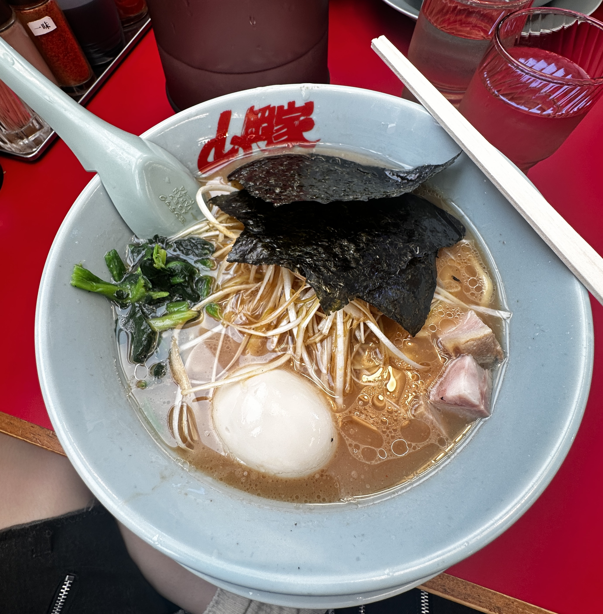

私の好きな食べ物は圧倒的にラーメンです。
四六時中ラーメンが食べたいなと思っています。
最近ハマっているラーメンは、二郎系と家系のラーメンです。
堅苦しいイメージのあるこれらのラーメンも最近はありがたいことにチェーン店などで気軽に食べられるようになったので嬉しい限りです。
その中でも"山岡家"という家系チェーン店のラーメンがお気に入りです。
今年に入ってから友達にドライブへ連れて行ってもらったときに初めて食べて衝撃を受けました。
スープの種類がたくさんあり、面の硬さ、油の量、味の濃さ、トッピングまでも好きにカスタムできるので、
いろんな味を楽しめて何回でも行きたいなと思えます。